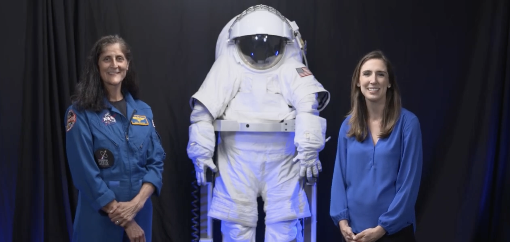

A cinematic educational video series designed to make lunar science accessible and engaging. This project blends storytelling, research, and visual design to create an immersive educational experience.
This project focused on creating a multi-part video series about lunar exploration.
I handled scripting, filming, editing, motion graphics, and sound design.
There are five episodes total, with two different sessions for each episode: Subject-Matter Expert (in the studio) and Experiential Field Reports (in the field).
The project began with research and storyboarding. I developed a narrative structure that balanced scientific accuracy with emotional storytelling.
The series increased engagement by 40% and received positive feedback for clarity and visual storytelling.
